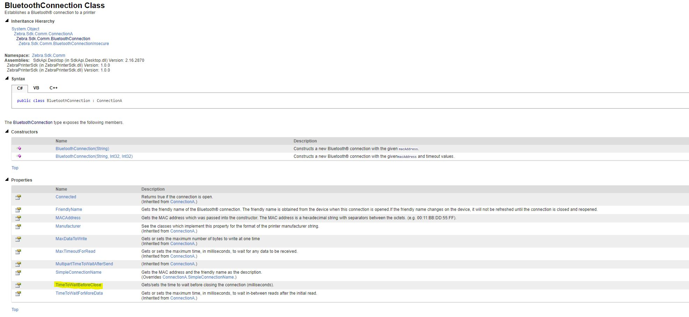

Link-OS SDK Hands-on with Xamarin
//Expert user has replied.
Hi there, I have join the Zebra Dev Con at 3th of November for the Link-OS SDK Hands-on with Xamarin session. After the session i have been told by the presenter to set the value of a method or properties in order to reduce the time needed for connection.close method. I am trying to look for the method or properties that i can use to reduce the time to wait for the connection.close() method. So far i have tried set MaxTimeoutForRead = 1000; but the result is same (takes 5000ms) to close. Is that any other properties i could change?
5 Replies
Hello,
In the documentation you can find all the variables that are settable for the BluetoothConnection class. I've highlighted the object below that you will need to set to get a lower wait time before closing the connection. You can also find this documentation from downloading the LinkOS SDK off the Zebra website and inside the version of the SDK you are using there will be a documentation folder. Open that up and click on "index" to open the documentation.

Hi there, seems like i need to install zebra.printer.sdk then only i can access the method. If i use link os sdk 1.2, there is no such method available for me to use in bluetooth connection class
From the print-station xamarin sample, i couldn't find the bluetoothconnection class and also the method TimeToWaitBeforeClose after i import the zebra.sdk.comm. The version of the sdk is 2.15.2634, am i missing anything?
I manage to find the method, seems like i need to install zebraprinter.sdk then only can find the method TimeToWaitBeforeClose (). Problem now is when i try to import zebra printer.sdk, i get the nuget error
"Package 'MSBuild.Sdk.Extras 1.6.46' has a package type 'MSBuildSdk' that is not supported by project". I am targeting android 8.1 and my visual studio ide is VS2017 version 15.7
Hi Yang Song,
The correct package is the Zebra.Printer.SDK v2.15.2634 and should be imported via the Manage NuGet Packages to your Xamarin project. The Xamarin project that you want the Zebra.Printer.SDK v2.15.2634 to be imported into should be based on Xamarin.Form. Also, the Zebra.Printer.SDK v2.15.2634 is built for .NET Framework 4.7 or later.